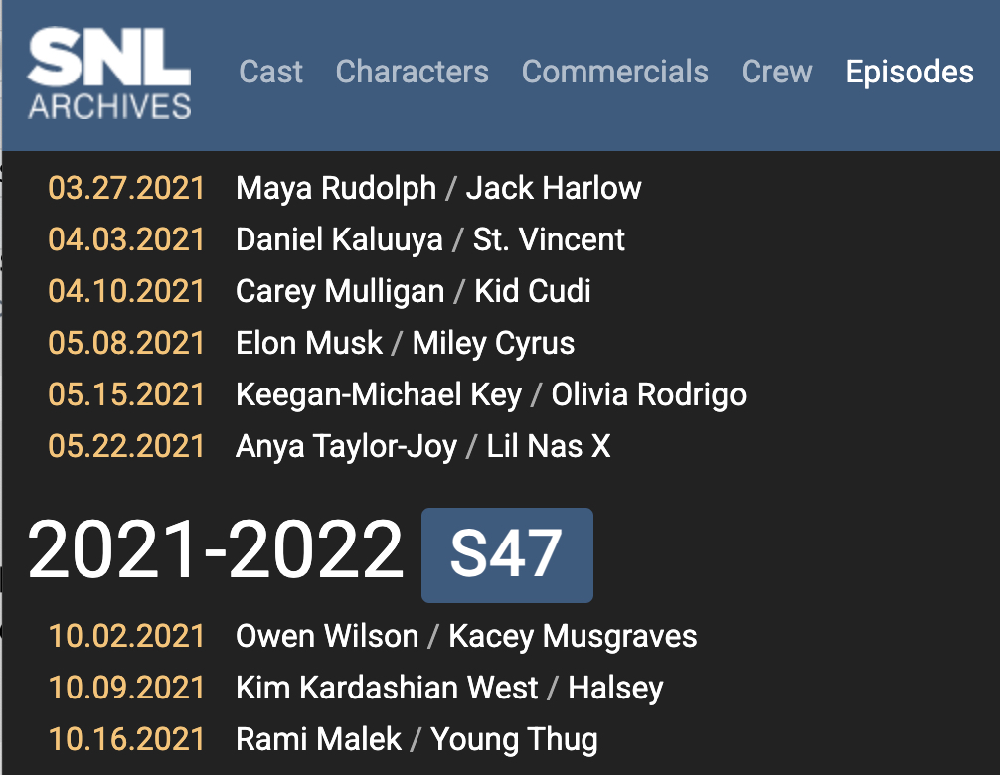

con_duckdb <- DBI::dbConnect(duckdb::duckdb(),
dbdir = "duck_datab")Editing Databases
Today’s example
We will continue to use DuckDB so that we have write access to the files we want to edit.
Saturday Night Live
Consider the Saturday Night Live datasets available on the snldb GitHub repo.
Changing data
The UPDATE function allows you to change a value in a table across all rows that match a certain criteria.
SELECT * FROM impressions
WHERE name LIKE 'Ivanka%';| impid | aid | name |
|---|---|---|
| 2598 | Scarlett Johansson | Ivanka Trump |
| 3716 | Emily Blunt | Ivanka Trump |
| 3694 | Margot Robbie | Ivanka Trump |
| 3679 | Vanessa Bayer | Ivanka Trump |
| 2340 | Maya Rudolph | Ivanka Trump |
UPDATE
For funsies, let’s change Ivanka Trump to Ivanka Kushner.
UPDATE impressions
SET name = 'Ivanka Kushner'
WHERE name LIKE 'Ivanka%';SELECT * FROM impressions
WHERE name LIKE 'Ivanka%';| impid | aid | name |
|---|---|---|
| 2598 | Scarlett Johansson | Ivanka Kushner |
| 3716 | Emily Blunt | Ivanka Kushner |
| 3694 | Margot Robbie | Ivanka Kushner |
| 3679 | Vanessa Bayer | Ivanka Kushner |
| 2340 | Maya Rudolph | Ivanka Kushner |
UPDATE
Inserting data
Task: include recent hosts in the hosts table.
By searching the SNL archives, we can see that the next host, chronologically was Elon Musk on May 8, 2021.

Inserting data
Task: include recent hosts in the hosts table.
By searching the SNL archives, we can see that the next host, chronologically was Elon Musk on May 8, 2021.
SELECT * FROM hosts
ORDER BY epid DESC
LIMIT 10;| epid | aid |
|---|---|
| 20210410 | Carey Mulligan |
| 20210403 | Daniel Kaluuya |
| 20210327 | Maya Rudolph |
| 20210227 | Nick Jonas |
| 20210220 | Rege-Jean Page |
| 20210213 | Regina King |
| 20210206 | Dan Levy |
| 20210130 | John Krasinski |
| 20201219 | Kristen Wiig |
| 20201212 | Timothee Chalamet |
Inserting data
INSERT allows us to add the relevant information associated with the episode of SNL that Elon Musk hosted.
INSERT INTO hosts (epid, aid)
VALUES ('20210508', 'Elon Musk');SELECT * FROM hosts
ORDER BY epid DESC
LIMIT 10;| epid | aid |
|---|---|
| 20210508 | Elon Musk |
| 20210410 | Carey Mulligan |
| 20210403 | Daniel Kaluuya |
| 20210327 | Maya Rudolph |
| 20210227 | Nick Jonas |
| 20210220 | Rege-Jean Page |
| 20210213 | Regina King |
| 20210206 | Dan Levy |
| 20210130 | John Krasinski |
| 20201219 | Kristen Wiig |
Inserting data
It would be tedious to INSERT all of the most recent host information by hand. Instead, we’ll scrape the SNL archives using the R package rvest, which allows us to pull out the appropriate html elements. The epid and aid are joined together in a tibble, and filtered to only include episodes which are not already in the episodes table.
library(rvest)
recent_hosts <- read_html("http://www.snlarchives.net/Episodes/") |>
html_nodes("tr") |>
purrr::map_df( ~ tibble(
epid = .x |> html_node("a.ms-2.me-2") |>
html_attr("href") |>
str_extract("\\d+"),
aid = .x |> html_node("td:nth-child(2)") |>
html_text2() |>
str_extract("[\\w\\. \\w\\.]+(?=/|$)")
)) |>
filter(epid > 20210508)
write_csv(recent_hosts, "data/recent_hosts.csv")Inserting data
INSERT INTO hosts
SELECT *
FROM READ_CSV('data/recent_hosts.csv', AUTO_DETECT = TRUE);SELECT * FROM hosts
ORDER BY epid DESC
LIMIT 10;| epid | aid |
|---|---|
| 20240518 | Jake Gyllenhaal |
| 20240511 | Maya Rudolph |
| 20240504 | Dua Lipa |
| 20240413 | Ryan Gosling |
| 20240406 | Kristen Wiig |
| 20240330 | Ramy Youssef |
| 20240309 | Josh Brolin |
| 20240302 | Sydney Sweeney |
| 20240224 | Shane Gillis |
| 20240203 | Ayo Edebiri |
Deleting data
You might change your mind and decide that you really only want hosts from years up to 2022. The DELETE function deletes any rows specified by the WHERE clause.
DELETE FROM hosts
WHERE epid > 20221231;SELECT * FROM hosts
ORDER BY epid DESC
LIMIT 10;| epid | aid |
|---|---|
| 20221217 | Austin Butler |
| 20221210 | Martin Short |
| 20221203 | Keke Palmer |
| 20221112 | Dave Chappelle |
| 20221105 | Amy Schumer |
| 20221029 | Jack Harlow |
| 20221015 | Megan Thee Stallion |
| 20221008 | Brendan Gleeson |
| 20221001 | Miles Teller |
| 20220521 | Natasha Lyonne |
Altering the table
ALTER TABLE changes the structure of a table. For example, you can add or delete columns, create or destroy indexes, change the type of existing columns, or rename columns or the table itself.
Multiple ADD, ALTER, DROP, and CHANGE clauses are permitted in a single ALTER TABLE statement, separated by commas.
Caveat: I have found DuckDB to be slightly finicky in some of the operations…
Altering the table (DROP columns)
ALTER TABLE t1
DROP COLUMN col1,
DROP COLUMN col2;Altering the table (CHANGE name and definition)
- rename an
INT NOT NULLcolumn fromatoband change its definition to use theBIGINTdata type while retaining theNOT NULLattribute.
ALTER TABLE t1 CHANGE a b BIGINT NOT NULL;Altering the table (CHANGE definition not name)
CHANGE, the syntax requires two column names, so you must specify the same name twice to leave the name unchanged. For example, to change the definition of columnb.
ALTER TABLE t1 CHANGE b b INT NOT NULL;Altering the table (MODIFY definition)
MODIFYis more convenient to change the definition without changing the name because it requires the column name only once.
ALTER TABLE t1 MODIFY b INT NOT NULL;Altering the table (CHANGE name not definition)
CHANGE, the syntax requires a column definition, so to leave the definition unchanged, you must respecify the definition the column currently has. For example, to rename anINT NOT NULLcolumn frombtoa.
ALTER TABLE t1 CHANGE b a INT NOT NULL;Altering the table (RENAME COLUMN name not definition)
RENAME COLUMNis more convenient to change the name without changing the definition because it requires only the old and new names.
ALTER TABLE t1 RENAME COLUMN b TO a;Altering the table (RENAME COLUMN multiple columns)
- cannot
RENAME COLUMNto a column name that already exists. The following are valid.
/* swap a and b */
ALTER TABLE t1 RENAME COLUMN a TO b,
RENAME COLUMN b TO a;
/* "rotate" a, b, c through a cycle */
ALTER TABLE t1 RENAME COLUMN a TO b,
RENAME COLUMN b TO c,
RENAME COLUMN c TO a;Temporary Tables
Temporary tables are used to break down complex queries into smaller, more manageable steps. For example, let’s say we want to JOIN two tables after each has been filtered using different WHERE clauses. The filtered tables can each be saved into their own temporary tables and then the temporary tables can be merged.
Tables in DuckDB are saved (to disk), even when the connection is closed. However, temporary tables are saved in memory (instead of on disk) and are deleted when the connection is closed.
Temporary Tables (episodes)
SELECT * FROM episodes LIMIT 10;| sid | epid | aired | epno |
|---|---|---|---|
| 46 | 20210410 | April 10, 2021 | 17 |
| 46 | 20210403 | April 3, 2021 | 16 |
| 46 | 20210327 | March 27, 2021 | 15 |
| 46 | 20210227 | February 27, 2021 | 14 |
| 46 | 20210220 | February 20, 2021 | 13 |
| 46 | 20210213 | February 13, 2021 | 12 |
| 46 | 20210206 | February 6, 2021 | 11 |
| 46 | 20210130 | January 30, 2021 | 10 |
| 46 | 20201219 | December 19, 2020 | 9 |
| 46 | 20201212 | December 12, 2020 | 8 |
Temporary Tables
We wouldn’t want to wrangle the date every single time we used the data.
CREATE TEMP TABLE episodes_date AS
SELECT *, CASE
WHEN POSITION(',' IN aired) > 0 THEN
EXTRACT(YEAR FROM CAST(
SUBSTRING(aired, POSITION(',' IN aired) + 2) || '-' ||
CASE
WHEN POSITION('January' IN aired) > 0 THEN '01'
WHEN POSITION('February' IN aired) > 0 THEN '02'
WHEN POSITION('March' IN aired) > 0 THEN '03'
WHEN POSITION('April' IN aired) > 0 THEN '04'
WHEN POSITION('May' IN aired) > 0 THEN '05'
WHEN POSITION('June' IN aired) > 0 THEN '06'
WHEN POSITION('July' IN aired) > 0 THEN '07'
WHEN POSITION('August' IN aired) > 0 THEN '08'
WHEN POSITION('September' IN aired) > 0 THEN '09'
WHEN POSITION('October' IN aired) > 0 THEN '10'
WHEN POSITION('November' IN aired) > 0 THEN '11'
WHEN POSITION('December' IN aired) > 0 THEN '12'
ELSE '01' -- Default to January if no month is found
END || '-' ||
SUBSTRING(aired, POSITION(' ' IN aired) + 1, 2) AS DATE
))
END AS year FROM episodes;What does POSITION do?
In case you are curious about the date wrangling code… consider SUBSTRING(aired, POSITION(',' IN aired) + 2)
POSITION(',' IN aired): This part of the expression uses thePOSITIONfunction to find the position of the first occurrence of the comma (,) in the stringaired. The result is the index (position) of the comma within the string.POSITION(',' IN aired) + 2: This adds 2 to the index of the comma. The+ 2is used to move the starting point of the substring two positions to the right of the comma. This is done to exclude the comma itself and any following spaces.SUBSTRING(aired, POSITION(',' IN aired) + 2): This part uses the SUBSTRING function to extract a substring from the stringaired. The starting position of the substring is determined byPOSITION(',' IN aired) + 2, and it goes until the end of the string. This effectively removes the part of the string that comes before and including the first comma.
In summary, the entire expression is extracting a substring from the original string aired, starting from two positions to the right of the first comma and continuing until the end of the string. This can be useful in scenarios where you want to remove or isolate part of a string based on the position of a specific character (in this case, the comma).
Temporary Table exists!
SELECT * FROM episodes_date LIMIT 10;| sid | epid | aired | epno | year |
|---|---|---|---|---|
| 46 | 20210410 | April 10, 2021 | 17 | 2021 |
| 46 | 20210403 | April 3, 2021 | 16 | 2021 |
| 46 | 20210327 | March 27, 2021 | 15 | 2021 |
| 46 | 20210227 | February 27, 2021 | 14 | 2021 |
| 46 | 20210220 | February 20, 2021 | 13 | 2021 |
| 46 | 20210213 | February 13, 2021 | 12 | 2021 |
| 46 | 20210206 | February 6, 2021 | 11 | 2021 |
| 46 | 20210130 | January 30, 2021 | 10 | 2021 |
| 46 | 20201219 | December 19, 2020 | 9 | 2020 |
| 46 | 20201212 | December 12, 2020 | 8 | 2020 |
Using a temporary table
Now that the year variable has been created in the new temporary table called episodes_date, we can use episode_date to query and find, for example, all of the hosts in 2019.
SELECT hosts.aid, ep.aired, ep.year FROM hosts
JOIN episodes_date AS ep ON hosts.epid = ep.epid
WHERE year = 2019
LIMIT 25;| aid | aired | year |
|---|---|---|
| Eddie Murphy | December 21, 2019 | 2019 |
| Scarlett Johansson | December 14, 2019 | 2019 |
| Jennifer Lopez | December 7, 2019 | 2019 |
| Will Ferrell | November 23, 2019 | 2019 |
| Harry Styles | November 16, 2019 | 2019 |
| Kristen Stewart | November 2, 2019 | 2019 |
| Chance the Rapper | October 26, 2019 | 2019 |
| David Harbour | October 12, 2019 | 2019 |
| Phoebe Waller-Bridge | October 5, 2019 | 2019 |
| Woody Harrelson | September 28, 2019 | 2019 |
Best practice
It is always a good idea to terminate the SQL connection when you are done with it.
dbDisconnect(con_duckdb, shutdown = TRUE):::